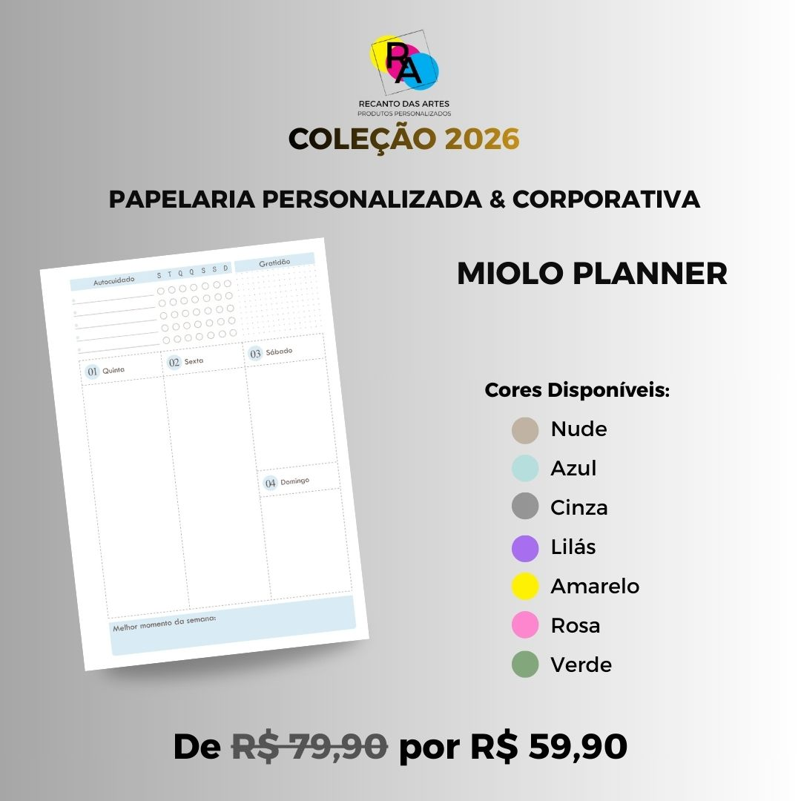

Planner A5 Exclusivo


De R$ 69,90
Por R$ 59,90
O Planner A5 2026 foi desenvolvido para organizar a sua rotina com leveza, praticidade e acabamento artesanal exclusivo.
Especificações do Produto
- Capa dura com laminação fosca de alta durabilidade
- Miolo funcional com 100 folhas de 90g (escolha a cor do miolo)
- Fecho com elástico e acabamento com ilhós
- Encadernação em espiral metálica (wire-o)